Entenda como os signos influenciam sua personalidade
Clique em um signo para conhecer suas características
⬆️
Voltar aos Signos 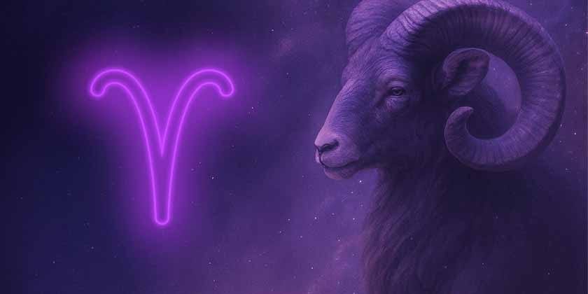21/03 - 19/04
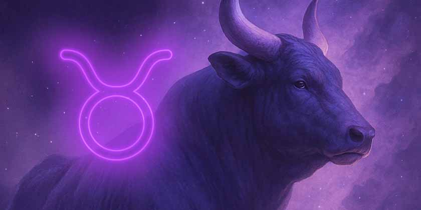20/04 - 20/05
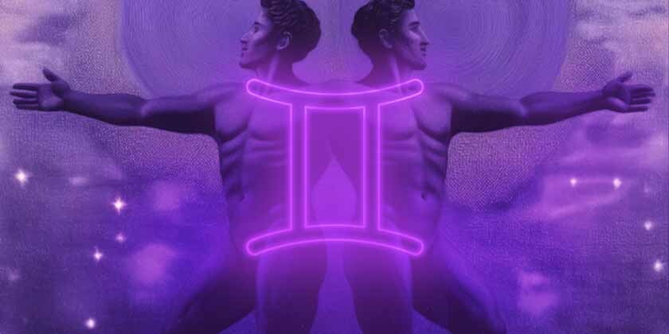21/05 - 20/06
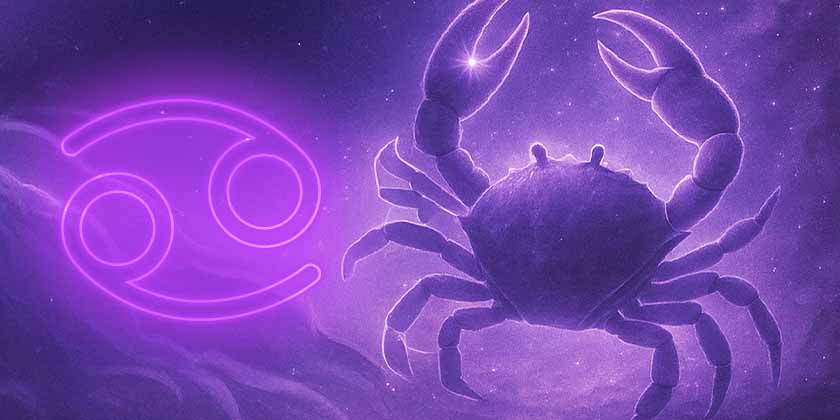21/06 - 22/07
23/07 - 22/08
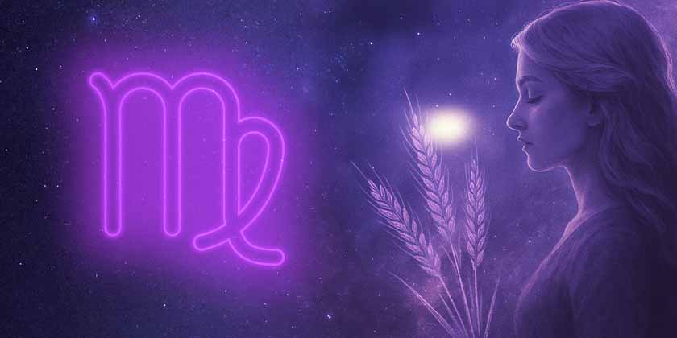23/08 - 22/09
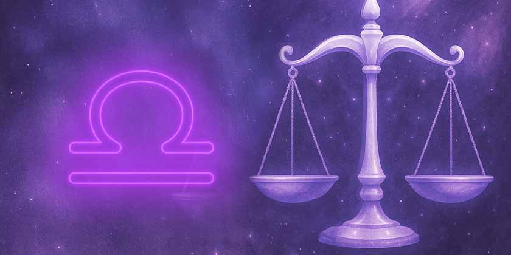23/09 - 22/10
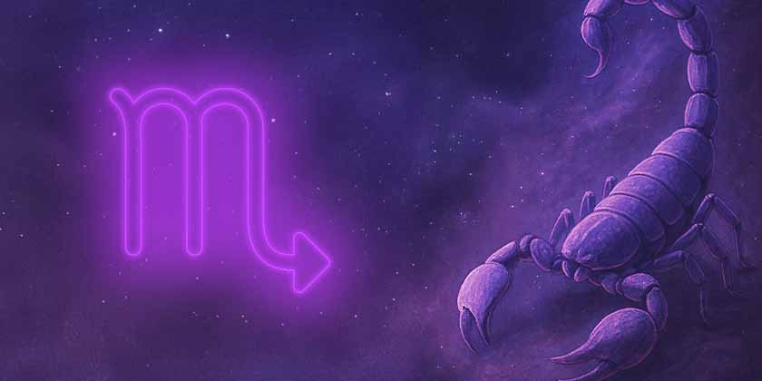23/10 - 21/11
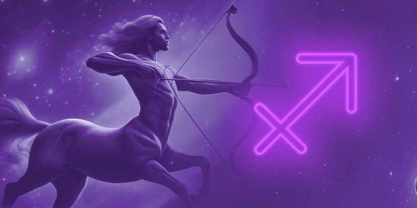22/11 - 21/12
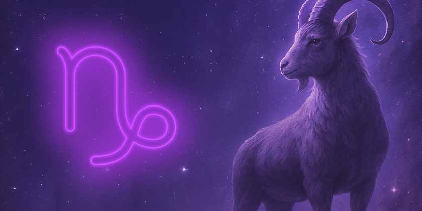22/12 - 19/01
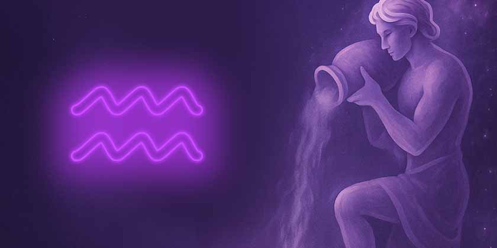20/01 - 18/02
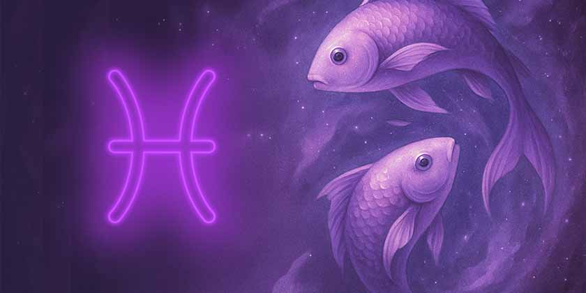19/02 - 20/03
21/03 - 19/04 | 🔥 Fogo - Cardinal
Pessoas com Sol em Áries são naturalmente corajosas, enérgicas e pioneiras. Gostam de liderar e iniciar novos projetos. São impulsivas, diretas e competitivas. Têm grande entusiasmo pela vida e não temem desafios. Podem ser impacientes e precipitadas, mas sua determinação e coragem são admiráveis.
Com Áries no ascendente, a pessoa projeta uma imagem de confiança, dinamismo e independência. A primeira impressão é de alguém assertivo e direto. Tende a agir rapidamente e pode parecer impaciente. A aparência física costuma ser marcante, com traços fortes e postura decidida.
20/04 - 20/05 | 🌱 Terra - Fixo
Pessoas com Sol em Touro são práticas, estáveis e determinadas. Valorizam segurança, conforto e beleza. São pacientes e persistentes em seus objetivos. Apreciam os prazeres sensoriais da vida. Podem ser teimosas, mas sua lealdade e confiabilidade são incomparáveis.
Com Touro no ascendente, a pessoa transmite calma, estabilidade e sensualidade. A primeira impressão é de alguém confiável e centrado. Movimentos tendem a ser deliberados e graciosos. A aparência física costuma ser atraente, com traços suaves e presença agradável.
21/05 - 20/06 | 💨 Ár- Mutável
Pessoas com Sol em Gêmeos são comunicativas, curiosas e versáteis. Adoram aprender e compartilhar informações. São adaptáveis e têm facilidade com palavras. Possuem mente ágil e gostam de variedade. Podem ser dispersas, mas sua inteligência e sociabilidade são notáveis.
Com Gêmeos no ascendente, a pessoa projeta vivacidade, curiosidade e jovialidade. A primeira impressão é de alguém comunicativo e interessado. Gestos tendem a ser expressivos e animados. A aparência física costuma ser jovial, com olhar curioso e sorriso fácil.
21/06 - 22/07 | 💧 Água- Cardinal
Pessoas com Sol em Câncer são emocionais, intuitivas e protetoras. Valorizam família e lar acima de tudo. São sensíveis e empáticas com os sentimentos alheios. Possuem forte memória emocional. Podem ser defensivas, mas seu carinho e dedicação são profundos.
Com Câncer no ascendente, a pessoa transmite sensibilidade, acolhimento e proteção. A primeira impressão é de alguém gentil e receptivo. Movimentos tendem a ser suaves e cuidadosos. A aparência física costuma ter traços delicados e expressão acolhedora.
23/07 - 22/08 | 🔥 Fogo - Fixo
Pessoas com Sol em Leão são criativas, generosas e carismáticas. Gostam de brilhar e ser reconhecidas. São leais e têm grande coração. Possuem dignidade natural e senso dramático. Podem ser orgulhosas, mas sua generosidade e calor humano são genuínos.
Com Leão no ascendente, a pessoa projeta confiança, carisma e nobreza. A primeira impressão é de alguém magnético e impressionante. Postura tende a ser ereta e majestosa. A aparência física costuma ser marcante, com presença forte e cabelos volumosos.
23/08 - 22/09 | 🌱 Terra - Mutável
Pessoas com Sol em Virgem são analíticas, práticas e prestativas. Buscam perfeição e eficiência em tudo. São organizadas e atentas aos detalhes. Possuem senso crítico apurado. Podem ser exigentes demais, mas sua dedicação e competência são excepcionais.
Com Virgem no ascendente, a pessoa transmite organização, modéstia e atenção. A primeira impressão é de alguém reservado e observador. Movimentos tendem a ser precisos e controlados. A aparência física costuma ser limpa e arrumada, com atenção aos detalhes.
23/09 - 22/10 | 💨 Ár- Cardinal
Pessoas com Sol em Libra são diplomáticas, charmosas e equilibradas. Valorizam harmonia e justiça. São sociáveis e têm senso estético refinado. Buscam parcerias e evitam conflitos. Podem ser indecisos, mas sua elegância e tato são admiráveis.
Com Libra no ascendente, a pessoa projeta charme, elegância e diplomacia. A primeira impressão é de alguém agradável e refinado. Movimentos tendem a ser graciosos e equilibrados. A aparência física costuma ser harmoniosa, com traços simétricos e sorriso encantador.
23/10 - 21/11 | 💧 Água- Fixo
Pessoas com Sol em Escorpião são intensas, profundas e transformadoras. Possuem grande força emocional e magnetismo. São investigativas e não temem o desconhecido. Têm capacidade de regeneração. Podem ser controladoras, mas sua lealdade e intensidade são poderosas.
Com Escorpião no ascendente, a pessoa transmite mistério, intensidade e magnetismo. A primeira impressão é de alguém profundo e penetrante. O olhar tende a ser intenso e investigativo. A aparência física costuma ser marcante, com presença magnética e aura poderosa.
22/11 - 21/12 | 🔥 Fogo - Mutável
Pessoas com Sol em Sagitário são otimistas, aventureiras e filosóficas. Amam liberdade e exploração. São honestas e têm visão ampla da vida. Buscam significado e expansão. Podem ser exageradas, mas seu entusiasmo e sabedoria são inspiradores.
Com Sagitário no ascendente, a pessoa projeta otimismo, aventura e expansividade. A primeira impressão é de alguém alegre e descontraído. Movimentos tendem a ser amplos e desinibidos. A aparência física costuma ser atlética, com sorriso largo e olhar distante.
22/12 - 19/01 | 🌱 Terra - Cardinal
Pessoas com Sol em Capricórnio são ambiciosas, disciplinadas e responsáveis. Valorizam estrutura e conquistas. São pacientes e trabalham duro por seus objetivos. Possuem maturidade natural. Podem ser rígidas, mas sua determinação e integridade são sólidas.
Com Capricórnio no ascendente, a pessoa transmite seriedade, maturidade e autoridade. A primeira impressão é de alguém responsável e confiável. Postura tende a ser formal e reservada. A aparência física costuma ter traços marcados, com expressão séria e porte digno.
20/01 - 18/02 | 💨 Ár- Fixo
Pessoas com Sol em Aquário são originais, independentes e humanitárias. Valorizam liberdade e inovação. São progressistas e têm visão futurista. Buscam igualdade e fraternidade. Podem ser distantes emocionalmente, mas sua originalidade e idealismo são únicos.
Com Aquário no ascendente, a pessoa projeta originalidade, independência e excentricidade. A primeira impressão é de alguém diferente e interessante. Estilo tende a ser único e não convencional. A aparência física costuma ter algo distintivo, com olhar distante e postura descontraída.
19/02 - 20/03 | 💧 Água- Mutável
Pessoas com Sol em Peixes são sensíveis, compassivas e intuitivas. Possuem rica vida interior e imaginação. São empáticas e conectadas ao espiritual. Têm talento artístico natural. Podem ser escapistas, mas sua sensibilidade e compaixão são profundas.
Com Peixes no ascendente, a pessoa transmite sensibilidade, sonhadora e mística. A primeira impressão é de alguém gentil e etéreo. Movimentos tendem a ser fluidos e graciosos. A aparência física costuma ter olhar sonhador, traços suaves e aura delicada.
Preencha seus dados de nascimento para receber seu mapa astral detalhado